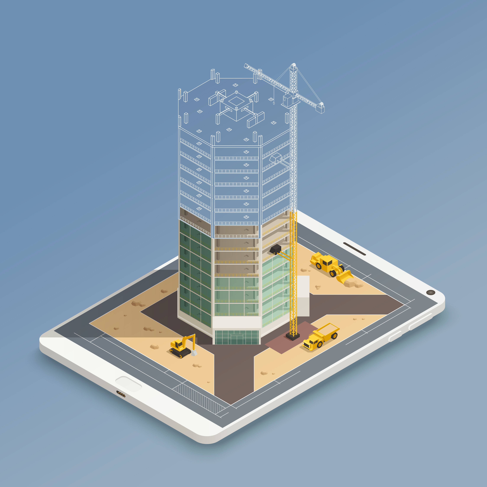

<!-- ======= Features Section ======= -->
<section id="features" class="features">
    <div class="container " data-aos="fade-up">
        <div class="section-header">
            <h2>Research Areas</h2>
        </div>
        <ul class="nav nav-tabs row gy-4 d-flex">

            <li class="nav-item col-6 col-md-4 col-lg-2">
                <a class="nav-link active show" data-bs-toggle="tab" data-bs-target="#tab-1">
                    <h4>Smart structure and system</h4>
                </a>
            </li><!-- End Tab 1 Nav -->

            <li class="nav-item col-6 col-md-4 col-lg-2">
                <a class="nav-link" data-bs-toggle="tab" data-bs-target="#tab-2">
                    <h4>Design against failure and fracture</h4>
                </a>
            </li><!-- End Tab 2 Nav -->

            <li class="nav-item col-6 col-md-4 col-lg-2">
                <a class="nav-link" data-bs-toggle="tab" data-bs-target="#tab-3">
                    <h4>Composite Design and Manufacturing</h4>
                </a>
            </li><!-- End Tab 3 Nav -->

            <li class="nav-item col-6 col-md-4 col-lg-2">
                <a class="nav-link" data-bs-toggle="tab" data-bs-target="#tab-4">
                    <h4>Building Physics and Advanced Material Mechanics</h4>
                </a>
            </li>
            <li class="nav-item col-6 col-md-4 col-lg-2">
                <a class="nav-link" data-bs-toggle="tab" data-bs-target="#tab-5">
                    <h4>Advance manufacturing from functional material to devices</h4>
                </a>
            </li><!-- End Tab 6 Nav -->

            <li class="nav-item col-6 col-md-4 col-lg-2">
                <a class="nav-link" data-bs-toggle="tab" data-bs-target="#tab-6">
                    <h4>Understading flow of mass and fluid</h4>
                </a>
            </li><!-- End Tab 4 Nav -->


        </ul>
        <div class="tab-content">

            <div class="tab-pane active show" id="tab-1">
                <div class="row gy-4">
                    <div class="col-lg-8 order-2 order-lg-1" data-aos="fade-up" data-aos-delay="100">
                        <h3>Smart Structure & System:</h3>
                        <p class="fst-italic">
                            <b> Faculty members : </b> Dr. Rajeev Kumar, Dr. Vishal S. Chauhan, Dr. Rahul Vaish, Dr
                            Subhamoy Sen
                        </p>
                        <div class="research-content">
                            <ul>
                                <li> <b> Vision:</b> </li>
                                <li>To be known worldwide for the expertise in design and fabrication of smart
                                    structure and system.
                                <li> <b> Mission:</b></li>
                                <ul>
                                    <li><i class="bi bi-check-circle-fill"></i> To propose new designs for active
                                        vibration control and shape control for
                                        smart structure.
                                    </li>
                                    <li><i class="bi bi-check-circle-fill"></i> To develop active-sensing based
                                        structural heath monitoring.</li>
                                    <li><i class="bi bi-check-circle-fill"></i> Development of smart sensors & actuators
                                    </li>
                                    <li><i class="bi bi-check-circle-fill"></i> To develop piezoelectric and
                                        tribolelectric energy harvesters </li>
                                    <li><i class="bi bi-check-circle-fill"></i> To impart education to produce
                                        professionals capable of leading efforts
                                        towards innovative
                                        product </li>
                                </ul>
                            </ul>
                        </div>
                    </div>
                    <div class="col-lg-4 order-1 order-lg-2 text-center">
                        
                    </div>
                </div>
            </div><!-- End Tab Content 1 -->

            <div class="tab-pane" id="tab-2">
                <div class="row gy-4">
                    <div class="col-lg-8 order-2 order-lg-1" data-aos="fade-up" data-aos-delay="100">
                        <h3>Design against failure and fracture</h3>
                        <p class="fst-italic">
                            <b> Faculty members : </b> Dr. Himanshu Pathak Dr. Rajesh Ghosh, Dr. M. Talha, Dr. Arpan
                            Gupta
                        </p>
                        <div class="research-content">
                            <ul>
                                <li> <b> Vision:</b> </li>
                                <li>To be known worldwide for the expertise in design and fabrication of smart
                                    structure and system.
                                <li> <b> Mission:</b></li>
                                <ul>
                                    <li><i class="bi bi-check-circle-fill"></i>To propose new designs for active
                                        vibration control and shape control for
                                        smart structure.
                                    </li>
                                    <li><i class="bi bi-check-circle-fill"></i> To develop active-sensing based
                                        structural heath monitoring.</li>
                                    <li><i class="bi bi-check-circle-fill"></i> Development of smart sensors & actuators
                                    </li>
                                    <li><i class="bi bi-check-circle-fill"></i> To develop piezoelectric and
                                        tribolelectric energy harvesters </li>
                                    <li><i class="bi bi-check-circle-fill"></i> To impart education to produce
                                        professionals capable of leading efforts
                                        towards innovative
                                        product </li>
                                </ul>
                            </ul>
                        </div>
                    </div>
                    <div class="col-lg-4 order-1 order-lg-2 text-center">
                        
                    </div>
                </div>
            </div><!-- End Tab Content 2 -->

            <div class="tab-pane" id="tab-3">
                <div class="row gy-4">
                    <div class="col-lg-8 order-2 order-lg-1" data-aos="fade-up" data-aos-delay="100">
                        <h3>Composite design and manufacturing</h3>
                        <p class="fst-italic">
                            <b> Faculty members : </b> Dr. Sunny Zafar Dr. Himanshu Pathak, Dr Satvasheel Powar, Dr.
                            Prateek Saxena
                        </p>
                        <div class="research-content">
                            <ul>
                                <li> <b> Vision:</b> </li>
                                <li>To provide research platform for composite structures for engineering
                                    applications through energy efficient sustainable manufacturing processes and
                                    advanced design analyses.
                                <li> <b> Mission:</b></li>
                                <ul>
                                    <li><i class="bi bi-check-circle-fill"></i> To be a pioneer in design and
                                        manufacturing of sustainable composite
                                        structure/materials.</li>
                                    <li><i class="bi bi-check-circle-fill"></i> To develop energy efficient
                                        manufacturing processes to fabricate composite
                                        for engineering applications</li>
                                    <li><i class="bi bi-check-circle-fill"></i> To develop advanced computational
                                        packages for efficient designing of
                                        composite structures.</li>
                                    <li><i class="bi bi-check-circle-fill"></i> To collaborate with leading
                                        international research groups working on
                                        similar research domain(s)</li>

                                </ul>
                            </ul>
                        </div>
                    </div>
                    <div class="col-lg-4 order-1 order-lg-2 text-center">
                        
                    </div>
                </div>
            </div><!-- End Tab Content 3 -->

            <div class="tab-pane" id="tab-4">
                <div class="row gy-4">
                    <div class="col-lg-8 order-2 order-lg-1" data-aos="fade-up" data-aos-delay="100">
                        <h3> Building Physics and Advanced Material Mechanics</h3>
                        <p class="fst-italic">
                            <b> Faculty members : </b> Dr Kaustav Sarkar, , Dr Sandip Saha, Dr Subhamoy Sen
                        </p>
                        <div class="research-content">
                            <ul>
                                <li> <b> Vision:</b> </li>
                                <li>To establish a team with expertise in the domains of structural engineering and
                                    the science of construction materials that would work towards the design of
                                    materials and components for optimal structural and thermal performance in
                                    buildings and other structures.

                                <li> <b> Mission:</b></li>
                                <ul>
                                    <li><i class="bi bi-check-circle-fill"></i> To set up a lab dedicated to the testing
                                        of mechanical, hygrothermal and
                                        durability characteristics of structural materials.</li>
                                    <li><i class="bi bi-check-circle-fill"></i> To attract sponsored research projects
                                        for the continuing development of
                                        research infrastructure available with the lab.</li>
                                    <li><i class="bi bi-check-circle-fill"></i> To work towards the solution of
                                        engineering problems specific to mountains
                                        in partnership with local stakeholders.</li>
                                    <li><i class="bi bi-check-circle-fill"></i> To nurture R&D in the design and
                                        development of efficient products and
                                        systems for a sustainable habitat</li>
                                </ul>
                            </ul>
                        </div>
                    </div>
                    <div class="col-lg-4 order-1 order-lg-2 text-center">
                        
                    </div>
                </div>
            </div><!-- End Tab Content 4 -->

            <div class="tab-pane" id="tab-5">
                <div class="row gy-4">
                    <div class="col-lg-8 order-2 order-lg-1" data-aos="fade-up" data-aos-delay="100">
                        <h3>
                            Advance manufacturing from functional material to devices</h3>
                        <p class="fst-italic">
                            <b> Faculty members : </b>Dr Viswanath Balakrishnan, Dr Rahul Vaish, Dr. Sudhir Kumar
                            Pandey, Dr. Jaspreert Kaur Randhawa, Dr Satvasheel Powar, Dr Rik Rani Koner, Dr Sumit
                            Sinha Ray
                        </p>
                        <div class="research-content">
                            <ul>
                                <li> <b> Vision:</b> </li>
                                <li>The research group consisting of faculties, students and post-doctoral
                                    researchers strives to achieve excellence in advanced manufacturing from
                                    functional material to devices by bridging the materials science concepts and
                                    latest advancement in both “top down” and “bottom up” approaches to overcome
                                    fundamental challenges with aid of complementary expertise that we have from
                                    engineering, chemistry, physics and materials.


                                <li> <b> Mission:</b></li>
                                Advanced manufacturing from functional material to devices group actively engages
                                research in some of the thrust areas of advanced materials which includes
                                <ul>
                                    <li><i class="bi bi-check-circle-fill"></i> Nanomaterials like carbon nanotubes,
                                        polymer fibers, and metal organic
                                        framework</li>
                                    <li><i class="bi bi-check-circle-fill"></i> 2D materials like Graphene, transition
                                        metal dichalcogenides.</li>
                                    <li><i class="bi bi-check-circle-fill"></i> Functional ceramics like ferroelectrics,
                                        thermoelectrics, transition and
                                        post-transition metal oxides.</li>
                                </ul>
                            </ul>
                        </div>
                    </div>
                    <div class="col-lg-4 order-1 order-lg-2 text-center">
                        
                    </div>
                </div>
            </div><!-- End Tab Content 5 -->

            <div class="tab-pane" id="tab-6">
                <div class="row gy-4">
                    <div class="col-lg-8 order-2 order-lg-1" data-aos="fade-up" data-aos-delay="100">
                        <h3>Thermo-Fluid</h3>
                        <p class="fst-italic">
                            <b> Faculty members : </b> Dr Atul Dhar Dr Pradeep Kumar,, Dr Gaurav Bhutani,, Dr Sumit
                            Sinha Ray, Dr Parmod Kumar
                        </p>
                        <div class="research-content">
                            <ul>
                                <li> <b> Vision:</b> </li>
                                <li>Thermo- Fluid research theme of the IIT Mandi focuses on understanding basic
                                    concepts of heat and mass flow through the numerical and experimental studies
                                    with strong focus on their application on improving the performance and
                                    sustainability of real systems.

                                <li> <b> Mission:</b></li>
                                <ul>
                                    <li><i class="bi bi-check-circle-fill"></i> Development of strong numerical
                                        experiment and computational capability for
                                        exploring the basic concepts of heat transfer and fluid flow and energy
                                        conversion.</li>
                                    <li><i class="bi bi-check-circle-fill"></i> Development of experimental facilities
                                        for understating the applied
                                        concepts of heat transfer and fluid flow and energy conversion in identified
                                        focus areas</li>
                                    <li><i class="bi bi-check-circle-fill"></i> Implementation of basic understating of
                                        concepts for improving the
                                        performance and sustainability of real systems.</li>

                                </ul>
                            </ul>
                        </div>
                    </div>
                    <div class="col-lg-4 order-1 order-lg-2 text-center">
                        
                    </div>
                </div>
            </div><!-- End Tab Content 6 -->
        </div>
    </div>

</section><!-- End Features Section -->